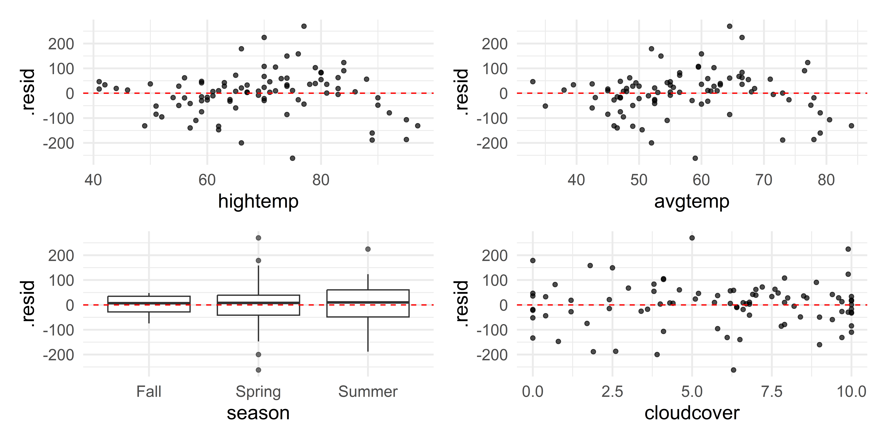

# load packages
library(tidyverse)
library(broom)
library(mosaic)
library(mosaicData)
library(patchwork)
library(knitr)
library(kableExtra)
library(scales)
library(GGally)
library(countdown)
library(rms)
# set default theme and larger font size for ggplot2
ggplot2::theme_set(ggplot2::theme_minimal(base_size = 16))MLR: Inference and Conditions
Application Exercise
- Open up AE 08 and complete Exercises 0-2
Topics
- Inference for multiple linear regression
- Checking model conditions
Computational setup
Data: rail_trail
- The Pioneer Valley Planning Commission (PVPC) collected data for ninety days from April 5, 2005 to November 15, 2005.
- Data collectors set up a laser sensor, with breaks in the laser beam recording when a rail-trail user passed the data collection station.
Rows: 90
Columns: 7
$ volume <dbl> 501, 419, 397, 385, 200, 375, 417, 629, 533, 547, 432, 418,…
$ hightemp <dbl> 83, 73, 74, 95, 44, 69, 66, 66, 80, 79, 78, 65, 41, 59, 50,…
$ avgtemp <dbl> 66.5, 61.0, 63.0, 78.0, 48.0, 61.5, 52.5, 52.0, 67.5, 62.0,…
$ season <chr> "Summer", "Summer", "Spring", "Summer", "Spring", "Spring",…
$ cloudcover <dbl> 7.6, 6.3, 7.5, 2.6, 10.0, 6.6, 2.4, 0.0, 3.8, 4.1, 8.5, 7.2…
$ precip <dbl> 0.00, 0.29, 0.32, 0.00, 0.14, 0.02, 0.00, 0.00, 0.00, 0.00,…
$ day_type <chr> "Weekday", "Weekday", "Weekday", "Weekend", "Weekday", "Wee…Source: Pioneer Valley Planning Commission via the mosaicData package.
Visualizing the data
rail_trail |> ggpairs()
Conduct a hypothesis test for \(\beta_j\)
Review: Simple linear regression (SLR)
gf_point(volume ~ avgtemp, data = rail_trail, alpha = 0.5) |>
gf_lm() |>
gf_labs(x = "rail_trail avgtemp", y = "avgtemp")
SLR model summary
avgtemp_slr_fit <- lm(volume ~ avgtemp, data = rail_trail)
tidy(avgtemp_slr_fit) |> kable()| term | estimate | std.error | statistic | p.value |
|---|---|---|---|---|
| (Intercept) | 99.60227 | 63.473587 | 1.569192 | 0.1201920 |
| avgtemp | 4.80205 | 1.084499 | 4.427899 | 0.0000272 |
SLR hypothesis test
| term | estimate | std.error | statistic | p.value |
|---|---|---|---|---|
| (Intercept) | 99.60227 | 63.473587 | 1.569192 | 0.1201920 |
| avgtemp | 4.80205 | 1.084499 | 4.427899 | 0.0000272 |
- Set hypotheses: \(H_0: \beta_1 = 0\) vs. \(H_A: \beta_1 \ne 0\)
. . .
- Calculate test statistic and p-value: The test statistic is \(t= 4.43\) . The p-value is calculated using a \(t\) distribution with 88 degrees of freedom. The p-value is \(2.72\times 10^{-5}\).
. . .
- State the conclusion: The p-value is small, so we reject \(H_0\). The data provide strong evidence that avgtemp is a helpful predictor for a rail_trail card holder’s rail_trail volume, i.e. there is a linear relationship between avgtemp and rail_trail volume.
Multiple linear regression
rail_trail_fit <- lm(volume ~ avgtemp + hightemp, data = rail_trail)
tidy(rail_trail_fit) |> kable()| term | estimate | std.error | statistic | p.value |
|---|---|---|---|---|
| (Intercept) | 1.667237 | 56.424299 | 0.0295482 | 0.9764951 |
| avgtemp | -7.942489 | 2.346235 | -3.3852060 | 0.0010689 |
| hightemp | 12.056606 | 2.041231 | 5.9065368 | 0.0000001 |
Multiple linear regression
The multiple linear regression model assumes \[Y|X_1, X_2, \ldots, X_p \sim N(\beta_0 + \beta_1 X_1 + \beta_2 X_2 + \dots + \beta_p X_p, \sigma_\epsilon^2)\]
. . .
For a given observation \((x_{i1}, x_{i2}, \ldots, x_{ip}, y_i)\), we can rewrite the previous statement as
\[y_i = \beta_0 + \beta_1 x_{i1} + \beta_2 x_{i2} + \dots + \beta_p x_{ip} + \epsilon_{i}, \hspace{10mm} \epsilon_i \sim N(0,\sigma_{\epsilon}^2)\]
Estimating \(\sigma_\epsilon\)
For a given observation \((x_{i1}, x_{i2}, \ldots,x_{ip}, y_i)\) the residual is \[ \begin{aligned} e_i &= y_{i} - \hat{y_i}\\ &= y_i - (\hat{\beta}_0 + \hat{\beta}_1 x_{i1} + \hat{\beta}_{2} x_{i2} + \dots + \hat{\beta}_p x_{ip}) \end{aligned} \]
. . .
The estimated value of the regression standard error , \(\sigma_{\epsilon}\), is
\[\hat{\sigma}_\epsilon = \sqrt{\frac{\sum_{i=1}^ne_i^2}{n-p-1}}\]
. . .
As with SLR, we use \(\hat{\sigma}_{\epsilon}\) to calculate \(SE_{\hat{\beta}_j}\), the standard error of each coefficient. See Matrix Form of Linear Regression for more detail.
MLR hypothesis test: avgtemp
- Set hypotheses: \(H_0: \beta_{avgtemp} = 0\) vs. \(H_A: \beta_{avgtemp} \ne 0\), given
hightempis in the model
. . .
Calculate test statistic and p-value: The test statistic is \(t = -3.39\). The p-value is calculated using a \(t\) distribution with \[(n - p - 1) = 90 - 2 -1 = 87\] degrees of freedom. The p-value is \(\approx 0.0011\).
- Note that \(p\) counts all non-intercept \(\beta\)’s
. . .
- State the conclusion: The p-value is small, so we reject \(H_0\). The data provides convincing evidence that a avgtemp is a useful predictor in a model that already contains rail_trail hightemp as a predictor for the rail_trail volume.
MLR hypothesis test: interaction terms
- Framework: Same as previous slide except use \(\beta\) of interaction term
- \(p\) (the number of predictors) should include the interaction term
- Conclusion: tells you whether interaction term is a useful predictor
- Warning: if \(X_1\) and \(X_2\) have an interaction term, don’t try to interpret their individual p-values… if interaction term is significant, then both variables are important
Complete Exercises 3 and 4.
Confidence interval for \(\beta_j\)
Confidence interval for \(\beta_j\)
The \(C\%\) confidence interval for \(\beta_j\) \[\hat{\beta}_j \pm t^* SE(\hat{\beta}_j)\] where \(t^*\) follows a \(t\) distribution with \(n - p - 1\) degrees of freedom.
Generically: We are \(C\%\) confident that the interval LB to UB contains the population coefficient of \(x_j\).
In context: We are \(C\%\) confident that for every one unit increase in \(x_j\), we expect \(y\) to change by LB to UB units, holding all else constant.
Complete Exercise 5.
Confidence interval for \(\beta_j\)
| term | estimate | std.error | statistic | p.value | conf.low | conf.high |
|---|---|---|---|---|---|---|
| (Intercept) | 1.67 | 56.42 | 0.03 | 0.98 | -110.48 | 113.82 |
| avgtemp | -7.94 | 2.35 | -3.39 | 0.00 | -12.61 | -3.28 |
| hightemp | 12.06 | 2.04 | 5.91 | 0.00 | 8.00 | 16.11 |
Inference pitfalls
Large sample sizes
Caution
If the sample size is large enough, the test will likely result in rejecting \(H_0: \beta_j = 0\) even \(x_j\) has a very small effect on \(y\).
Consider the practical significance of the result not just the statistical significance.
Instead of saying statistically significant say statistically detectable
Use confidence intervals to draw conclusions instead of relying only on p-values.
Small sample sizes
Caution
If the sample size is small, there may not be enough evidence to reject \(H_0: \beta_j=0\).
When you fail to reject the null hypothesis, DON’T immediately conclude that the variable has no association with the response.
There may be a linear association that is just not strong enough to detect given your data, or there may be a non-linear association.
Effect Size and Power
- Effect Size:
- General Idea: how big is your parameter compared to the variability of your data
- Why is it important: if parameter has small effect size, it may not be a useful parameter to include. However, what effect size is useful depends on your problem
- In practice: many formal ways of determining effects size which we won’t talk about
- Statistical Power: the ability of a hypothesis test to detect a given effect size
- more data = more power
- tons of data = tons of power
- In practice: think about how what effect size you’d like to be able to detect and design your study to collect enough data to do so
Complete Exercise 6
Conditions for inference
Model conditions
Our model conditions are the same as they were with SLR:
Linearity: There is a linear relationship between the response and predictor variables.
Constant Variance: The variability about the least squares line is generally constant.
Normality: The distribution of the residuals is approximately normal.
Independence: The residuals are independent from each other.
Checking Linearity
Look at a plot of the residuals vs. predicted values
Look at a plot of the residuals vs. each predictor
- Use scatter plots for quantitative and boxplots of categorical predictors
Linearity is met if there is no discernible pattern in each of these plots
Complete Exercises 7-10
Fitting the Full Model
full_model <- lm(volume ~ . , data = rail_trail)
full_model |> tidy() |> kable()| term | estimate | std.error | statistic | p.value |
|---|---|---|---|---|
| (Intercept) | 17.622161 | 76.582860 | 0.2301058 | 0.8185826 |
| hightemp | 7.070528 | 2.420523 | 2.9210743 | 0.0045045 |
| avgtemp | -2.036685 | 3.142113 | -0.6481896 | 0.5186733 |
| seasonSpring | 35.914983 | 32.992762 | 1.0885716 | 0.2795319 |
| seasonSummer | 24.153571 | 52.810486 | 0.4573632 | 0.6486195 |
| cloudcover | -7.251776 | 3.843071 | -1.8869743 | 0.0627025 |
| precip | -95.696525 | 42.573359 | -2.2478030 | 0.0272735 |
| day_typeWeekend | 35.903750 | 22.429056 | 1.6007696 | 0.1132738 |
Residuals vs. predicted values

Does the constant variance condition appear to be satisfied?

Checking constant variance
The vertical spread of the residuals is not constant across the plot.
The constant variance condition is not satisfied.
. . .
Given this conclusion, what might be a next step in the analysis?
Residuals vs. each predictor

Checking linearity
The plot of the residuals vs. predicted values looked OK
The plots of residuals vs.
hightempandavgtempappear to have a parabolic pattern.The linearity condition does not appear to be satisfied given these plots.
. . .
Given this conclusion, what might be a next step in the analysis?
Complete Exercises 11-12.
Checking normality

The distribution of the residuals is approximately unimodal and symmetric but the qqplot shows that tails are too heavy, so the normality condition is likely not satisfied. The sample size 90 is sufficiently large to relax this condition.
Checking independence
We can often check the independence condition based on the context of the data and how the observations were collected.
If the data were collected in a particular order, examine a scatter plot of the residuals versus order in which the data were collected.
If there is a grouping variable lurking in the background, check the residuals based on that grouping variable.
Recap
- Inference for individual predictors
- Hypothesis testing: same as SLR but add if all other terms are in the model
- Confidence intervals: same as SLR but add holding all other variables in the model constant
- Conditions: Same as for SLR
- For linearity, also check fitter values vs. each predictor